4. CRYOSPHERIC APPLICATIONS OF SCATTEROMETRY
4.1. Greenland
4.2.
Antarctica
4.3.
Snow
4.4.
Sea
Ice
Cryospheric applications of scatterometry include mapping of global snow cover, sea ice extent, and sea ice motion, detection of melt, classification of various types of sea ice, measurement of snow accumulation, and deriving the direction of wind patterns over Antarctica. My review of the literature on these topics encompasses about thirty journal articles, with a little over half of them focusing on applications related to sea ice. The remaining half are divided between topics related to Greenland, Antarctica, and snow cover mapping, with the greater portion of these devoted to Greenland. All of the papers that I found for this review were published between 1993-2003, split evenly between the first half and the second half of those ten years, indicating a steady interest in the topic. Also, these papers were published by about sixteen different first authors, indicating a rather widespread interest.
I will now review this literature, summarizing the various understandings that have been gained, methods employed, degree of success attained, and problems that have been encountered. Topically, I will divide this review between studies of Greenland, Antarctica, snow cover, and sea ice.
Arising out of increased concern about global sea level rise, one of the primary objectives of NASA’s Earth Observing System and the cryospheric science community is to determine the contributions to current and future sea level from the Earth’s ice sheets, Greenland and Antarctica (Asrar and Dozier, 1994). Somewhat surprisingly, it is not currently known yet whether or not these ice sheets are shrinking or growing. Greenland contains enough ice to raise global sea level by 5 m, while Antarctica has the potential for raising global sea levels by 70 m. The harsh environment and large area covered by these ice sheets have made mass balance (volume) measurements infeasible on a continuous base using airborne or in situ methods. Though spaceborne laser altimeters will help to answer questions of mass balance in a very direct manner with the recent launch of the Ice, Cloud, and land Elevation Satellite (ICESat) and the future launch of Calypso, it is also important to understand and characterize the processes that control changes in ice sheet mass balance to predict future change: primarily input from snow accumulation and output via snowmelt and glacial discharge into the ocean. Scatterometry can help to quantify and monitor these inputs and outputs.
First of all, monitoring snowmelt is critical to assessments of sea level rise: for its direct contribution, but also because it indirectly increases glacial discharge into the sea that is also a significant contributor to sea level. It has been demonstrated that snowmelt percolates down to the base of the Greenland ice sheet, providing a lubricant between the ice sheet and the underlying ground surface that initiates basal sliding and accelerates flow of ice towards the margins of the ice sheet and out into the surrounding ocean (Zwally et al., 2002).
Scatterometry is useful for measuring the extent of snowmelt
due to its extreme sensitivity to the presence of liquid water. As illustrated
in Figure 14,  decreases rapidly with only a very small increase in snow wetness, dropping
as much as ten decibels with only a 1% increase in wetness. In the microwave
spectral region, water has a relatively high complex dielectric constant resulting
in absorption of radar pulses, whereas dry snow is a good scatterer of radar
energy and results in higher
decreases rapidly with only a very small increase in snow wetness, dropping
as much as ten decibels with only a 1% increase in wetness. In the microwave
spectral region, water has a relatively high complex dielectric constant resulting
in absorption of radar pulses, whereas dry snow is a good scatterer of radar
energy and results in higher  .
Based on this simple distinction, several investigators have mapped snowmelt
extent on Greenland by detecting sudden decreases in
.
Based on this simple distinction, several investigators have mapped snowmelt
extent on Greenland by detecting sudden decreases in  of a certain number of decibels (Wismann, 2000; Wismann and Boehnke, 1997)
or by detecting relative changes between diurnal measurements of
of a certain number of decibels (Wismann, 2000; Wismann and Boehnke, 1997)
or by detecting relative changes between diurnal measurements of  (Nghiem et al., 2001). The results of these studies have shown that detection
of melt with spaceborne scatterometry correlates well with the timing of in
situ near-surface temperatures rising above 0° C, with one study
citing a correlation as high as 0.98 in such comparisons (Wismann, 2000).
(Nghiem et al., 2001). The results of these studies have shown that detection
of melt with spaceborne scatterometry correlates well with the timing of in
situ near-surface temperatures rising above 0° C, with one study
citing a correlation as high as 0.98 in such comparisons (Wismann, 2000).
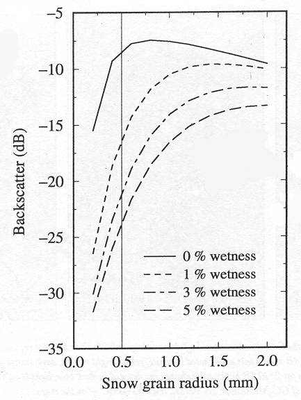
Fig. 14. Ku-band backscatter (VV) at 54° for different snow wetness (Nghiem et al., 2001).The other important process to ice sheet mass balance that is
critical to quantify and monitor is snow accumulation, which
has also been investigated on Greenland. It is not yet certain whether increased
temperatures from global warming might actually increase precipitation over
Greenland, leading to higher accumulation rates and perhaps even growth in
the ice sheet (Zwally, 1989): an intriguing paradox requiring further investigation.
Accumulation is commonly expressed in terms of its snow water equivalent
(SWE), which is the height in cm of liquid water contained in a vertical
column with a horizontal cross-section of 1 cm2. Because the backscatter
response to a volume of dry snow depends on its depth, density, and average
grain size, however, the relationship between  and SWE must be empirically modeled. This is because the density and grain
size vary with time and are not routinely measured over the entire ice sheet.
The expected trend, however, is that SWE and backscatter are inversely related:
as the snow layer grows deeper, less of the incident electromagnetic radiation
penetrates down to the underlying firn, which is a coarse, dense layer of
compressed snow with grain sizes comparable in size to radar wavelengths that
results in relatively high
and SWE must be empirically modeled. This is because the density and grain
size vary with time and are not routinely measured over the entire ice sheet.
The expected trend, however, is that SWE and backscatter are inversely related:
as the snow layer grows deeper, less of the incident electromagnetic radiation
penetrates down to the underlying firn, which is a coarse, dense layer of
compressed snow with grain sizes comparable in size to radar wavelengths that
results in relatively high  .
Secondly, one would expect B values to decrease as the snow layer
grows deeper: because snow is an isotropic volume scatterer, an increase in
snow further masks the more specular response of the underlying firn. These
relationships are both illustrated in Figure 15.
.
Secondly, one would expect B values to decrease as the snow layer
grows deeper: because snow is an isotropic volume scatterer, an increase in
snow further masks the more specular response of the underlying firn. These
relationships are both illustrated in Figure 15.
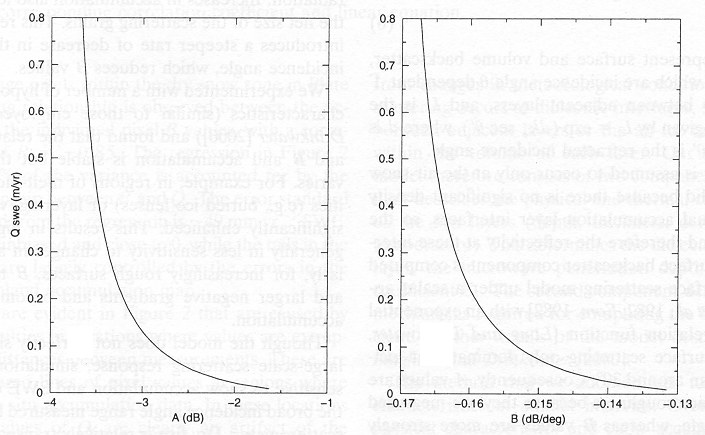
Fig. 15. Modeled Ku-band A and B values as a function of snow water equivalent (Q) (Drinkwater et al., 2001b).Drinkwater et al. (2001b) compared historical in situ snow accumulation measurements collected from snow pits throughout Greenland between 1952-1998 with A and B scatterometer measurements. Using these comparisons, they were able to derive empirical equations for computing SWE using scatterometer data. Their results were favorably validated with a transect of snow pits in 1996, which gave a root-mean-square (rms) error of only 0.05 m. Inhomogeneities in the subsurface layers of the ice sheet such as buried ice lenses that form from refrozen meltwater, however, as well as spatial variability in surface roughness, can confound empirical results. The applicability of this kind of empirical study, therefore, requires proper caution.
Lastly, scatterometer data have been used to map the different facies of the Greenland ice sheet. Greenland is conceptually separated into four different facies: the dry snow zone, or accumulation zone, which does not experience any melt throughout the year; the wet snow, or percolation, zone, which seasonally experiences scattered snowmelt that eventually percolates into the underlying firn to be later refrozen into subsurface ice lenses; the saturated snow zone, which seasonally experiences enough melt to saturate the entire snow surface with melt water; and the ablation zone, which completely melts the snow cover each summer, creating numerous surface ponds and lakes and exposing the underlying ice elsewhere. These four facies are illustrated in Figure 16. Mapping these facies, especially the dry snow and ablation zones, are important for defining the spatial extent of accumulation versus melt over the entire ice sheet to help estimate the net effect of these processes on mass balance.
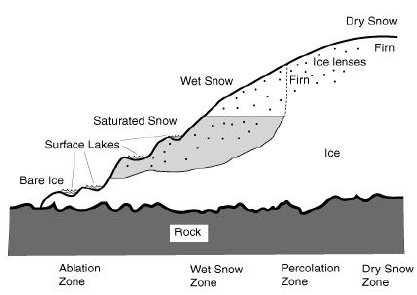
Fig. 16. Illustration of the four facies of Greenland (Drinkwater, 2001).The backscatter signature of each of these facies is distinct
enough to allow them to be mapped well using scatterometry. As explained above,
snow tends to decrease  as it masks the more intense backscatter from the underlying firn. For this
reason, the dry snow zone typically has a lower average
as it masks the more intense backscatter from the underlying firn. For this
reason, the dry snow zone typically has a lower average  compared to the adjacent percolation zone, which has less snow cover and relatively
high backscatter from buried ice lenses and subsurface firn, especially during
late fall and early winter. The saturated and ablation zones, on the other
hand, look similar to the percolation zone in winter but decrease significantly
in
compared to the adjacent percolation zone, which has less snow cover and relatively
high backscatter from buried ice lenses and subsurface firn, especially during
late fall and early winter. The saturated and ablation zones, on the other
hand, look similar to the percolation zone in winter but decrease significantly
in  during the summer as snowmelt begins. For all of the above reasons, the separation
between the dry snow zone and the percolation zone is most visible in scatterometry
images in late fall and early winter. Figure 17 depicts a time series of QuikSCAT
backscatter images that illustrates some of the processes just described.
Several studies have used scatterometry data to map Greenland’s facies
in this manner, which show retreat in some parts of the dry snow line towards
higher latitudes and increases in the summer melt extent (Drinkwater et al.,
2001b; Drinkwater and Long, 1998; Wismann and Boehnke, 1997; Long and Drinkwater,
1994).
during the summer as snowmelt begins. For all of the above reasons, the separation
between the dry snow zone and the percolation zone is most visible in scatterometry
images in late fall and early winter. Figure 17 depicts a time series of QuikSCAT
backscatter images that illustrates some of the processes just described.
Several studies have used scatterometry data to map Greenland’s facies
in this manner, which show retreat in some parts of the dry snow line towards
higher latitudes and increases in the summer melt extent (Drinkwater et al.,
2001b; Drinkwater and Long, 1998; Wismann and Boehnke, 1997; Long and Drinkwater,
1994).
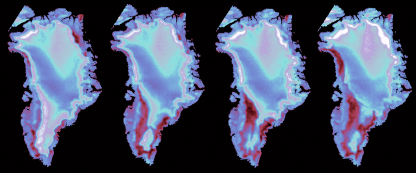 Fig. 17. QSCAT backscatter images over Greenland for day 203, 208, 213, and 218 in 1999 (left to right). Blue and white colors indicate dry surfaces while red and black indicate wet snow surfaces experiencing melt (NASA/JPL, 2003). |
Being closer to the pole in latitude than Greenland, Antarctica’s climate
is more stable. As a result, much of Antarctica can be considered a “dry
snow zone.” Very little accumulation occurs, however, because the atmosphere
is usually too cold to hold enough water for precipitation to develop. While
mass balance of the Antarctic ice sheet, then, has much greater stability
than that of Greenland, the West Antarctic Ice Sheet (WAIS) has potential
for collapse whereas the eastern half of the ice sheet is more firmly grounded.
The immense amount of ice stored in the Antarctic ice sheet, which is three
times the size of the U.S. and over a mile deep (Hildore and Oliver, 1993),
makes it important to monitor: containing 91% of the Earth’s total freshwater
supply and having the potential to rise sea level by as much as 70 m make
Antarctica cryos-fearsome!
A couple studies of Antarctic melt and facies mapping using scatterometry
prove the lack of significant melt across the entire ice sheet and show a
distinct lack of coherent “facies” distinctions as compared with
Greenland. Bingham and Drinkwater (2000) show that the greatest amount of
change over the period 1992-1997 occurred in margin areas surrounding Antarctica
where relatively high accumulation rates and melt do occur. To monitor interannual
shifts in these quantities, mean seasonal variability was subtracted from
the time series of scatterometer measurements. Plots of anomalies, then, showed
slight decreases in  in the margins, which indicates increases in accumulation in these regions
over the five year period. Recall that a deeper layer of snow limits the amount
of penetration to the more scattering firn and ice below it, which leads to
decreases in backscatter. In contrast, the central, more elevated portion
of the Antarctic ice sheet experiences relatively little accumulation; so
little, in fact, that it is like a cold desert (Hildore and Oliver, 1993).
Drinkwater and Long (1998) noted the relatively brighter backscatter that
corresponded with these low accumulation regions, resulting from large firn
grains. They also noted an increase in accumulation at the margins by comparing
SASS data from 1978 with that of NSCAT in 1996.
in the margins, which indicates increases in accumulation in these regions
over the five year period. Recall that a deeper layer of snow limits the amount
of penetration to the more scattering firn and ice below it, which leads to
decreases in backscatter. In contrast, the central, more elevated portion
of the Antarctic ice sheet experiences relatively little accumulation; so
little, in fact, that it is like a cold desert (Hildore and Oliver, 1993).
Drinkwater and Long (1998) noted the relatively brighter backscatter that
corresponded with these low accumulation regions, resulting from large firn
grains. They also noted an increase in accumulation at the margins by comparing
SASS data from 1978 with that of NSCAT in 1996.
Another interesting application of scatterometry data over Antarctica is
to derive the pattern of winds from patterns that occur in  between different azimuth angles. Katabatic winds, which
are gravity-driven winds of dense, cold air flowing down slope from the high
elevation regions of Antarctica, dominate the Antarctic climate. These winds
are some of the most persistent winds on the planet (Hildore and Oliver, 1993),
closely following the topography and thus the same direction over long stretches
of time. These stable winds carve characteristic patterns into the Antarctic
surface over time at different scales: forming sastrugi, strange abstract
sculpture like shapes, which are a meter or more tall and aligned in the direction
of the wind, spatially coherent snow dunes with wavelengths of about 10 km,
and large basin-scale surface waves on the scale of about 100 km (Long and
Drinkwater, 2000).
between different azimuth angles. Katabatic winds, which
are gravity-driven winds of dense, cold air flowing down slope from the high
elevation regions of Antarctica, dominate the Antarctic climate. These winds
are some of the most persistent winds on the planet (Hildore and Oliver, 1993),
closely following the topography and thus the same direction over long stretches
of time. These stable winds carve characteristic patterns into the Antarctic
surface over time at different scales: forming sastrugi, strange abstract
sculpture like shapes, which are a meter or more tall and aligned in the direction
of the wind, spatially coherent snow dunes with wavelengths of about 10 km,
and large basin-scale surface waves on the scale of about 100 km (Long and
Drinkwater, 2000).
Because the sastrugi align in the direction of the wind, scatterometers can
take advantage of changes in backscatter at different azimuth angles to deduce
the wind pattern. When the scatterometer beam is pointing perpendicular to
a raised surface feature such as sastrugi, the elevated slope of the feature
causes a strong specular reflection of the incident pulse, generating an intense
 value relative to when the scatterometer is pointing parallel to such a surface
and most of the transmitted pulse is specularly reflected away from the sensor
(Figure 18). For these reasons, peaks and troughs in
value relative to when the scatterometer is pointing parallel to such a surface
and most of the transmitted pulse is specularly reflected away from the sensor
(Figure 18). For these reasons, peaks and troughs in  versus azimuth angle are measured over the undulating sastrugi surface, with
peak values corresponding to the crosswind direction and troughs corresponding
to the wind direction. Note that ocean winds are determined using a similar
technique, except that the peaks correspond to the direction of the wind since
ocean waves and ripples are formed perpendicular to the wind motion.
versus azimuth angle are measured over the undulating sastrugi surface, with
peak values corresponding to the crosswind direction and troughs corresponding
to the wind direction. Note that ocean winds are determined using a similar
technique, except that the peaks correspond to the direction of the wind since
ocean waves and ripples are formed perpendicular to the wind motion.
Long and Drinkwater (2000) derived empirical relationships between azimuth
angle and backscatter during winter conditions when surface melt would not
confound the backscatter signal. The wind direction over the entire ice sheet
was then empirically derived (Figure 19). Problems with using this method
to derive wind direction over Antarctica are the limited number of azimuthal
angles available using fan-beam scatterometers as well as surface inhomogeneities.
Also, dune and basin-scale slopes can cause variations in  .
Lastly, changes in the alignment of surface features such as sastrugi and/or
snow dunes can also be responsible for changes in
.
Lastly, changes in the alignment of surface features such as sastrugi and/or
snow dunes can also be responsible for changes in  .
For this reason, Bingham and Drinkwater’s assessment of accumulation
on the Antarctic ice sheet, which was previously described, used selected
study regions where azimuthal modulation was known to be negligible (Bingham
and Drinkwater, 2000).
.
For this reason, Bingham and Drinkwater’s assessment of accumulation
on the Antarctic ice sheet, which was previously described, used selected
study regions where azimuthal modulation was known to be negligible (Bingham
and Drinkwater, 2000).
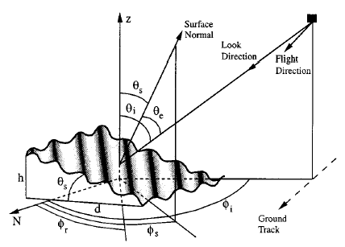 Fig. 18. Figure illustrating the relationship between the azimuth viewing geometry, the local slope, and the incidence angle for a small surface patch (Long and Drinkwater, 2000). |
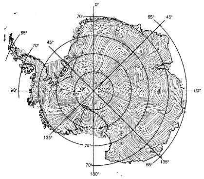 Fig. 19. Streamlines corresponding to wind direction derived from azimuthal modulation in NSCAT data (Long and Drinkwater, 2000). |
Snow mapping is important for climate reasons, because of its high albedo and natural insulation of the underlying surface, as well as for estimating Spring runoff amounts for predicting water supply, hydroelectric energy production, and potential flooding. Given its large spatial extent and sensitivity to microwave electromagnetic radiation, scatterometry is a useful tool for mapping snow.
While greater accumulation of snow on the Greenland and Antarctic
ice sheets increasingly masks the strongly scattering underlying firn and
ice layers so that measurements of  decrease, the opposite is true on land surfaces. Backscatter from soil, especially
frozen soil, is relatively low compared to that of snow, so that increasing
snow cover leads to increases in
decrease, the opposite is true on land surfaces. Backscatter from soil, especially
frozen soil, is relatively low compared to that of snow, so that increasing
snow cover leads to increases in  .
This relationship is used to detect snow. Increases and decreases in
.
This relationship is used to detect snow. Increases and decreases in  can be used to detect seasonal transitions of landscapes: (1) as soils and
vegetation freeze with colder temperatures in the winter, surface roughness
and dielectric properties decrease, leading to low backscatter values; (2)
then, as snow begins to fall and accumulate over the landscape, backscatter
values increase due to strong volume scattering of microwave energy within
the snow pack; (3) when winter ends and temperatures rise again, snow begins
to melt and the presence of unabsorbed liquid water leads to rapid decreases
in backscatter due to absorption, as previously discussed; (4) and lastly,
as snow departs and soils and vegetation begin to thaw, backscatter values
begin to rise again as absorbed moisture in the soils and vegetation increases
their dielectric constants.
can be used to detect seasonal transitions of landscapes: (1) as soils and
vegetation freeze with colder temperatures in the winter, surface roughness
and dielectric properties decrease, leading to low backscatter values; (2)
then, as snow begins to fall and accumulate over the landscape, backscatter
values increase due to strong volume scattering of microwave energy within
the snow pack; (3) when winter ends and temperatures rise again, snow begins
to melt and the presence of unabsorbed liquid water leads to rapid decreases
in backscatter due to absorption, as previously discussed; (4) and lastly,
as snow departs and soils and vegetation begin to thaw, backscatter values
begin to rise again as absorbed moisture in the soils and vegetation increases
their dielectric constants.
Nghiem and Tsai (2001) used these principles to detect snow
cover over the Northern Hemisphere. Their comparison of backscatter images
with in situ snow extent contours show good agreement of trends,
with finer detail possible in the scatterometer data (Figure 20). Kimball
et al. (2001) also use these relationships to derive the total area of frozen
terrain in Alaska, matching areas of frozen terrain derived from sub-0°
C in situ temperature measurements with those derived from  differences with an r2 of 0.881.
differences with an r2 of 0.881.
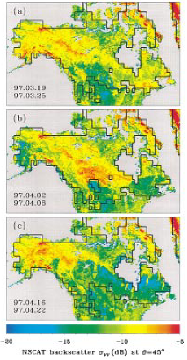 Fig. 20. NSCAT backscatter of North America, where yellow/red areas indicate snow cover and green/blue areas indicate snow-free regions. Shows progression and retreat of snow cover over southern Canada and northern United States during the blizzard of 1997 (Nghiem and Tsai, 2001). |
When using scatterometry to measure relative snow cover amounts, it is important to consider that backscatter from snow increases with increasing accumulation only until a certain saturation depth beyond which the microwaves cannot reach because of attenuation from dispersive loss in the snow pack volume (Nghiem and Tsai, 2001). This penetration depth is frequency dependent, with lower frequencies (i.e. longer wavelengths) capable of penetrating further into the snow, as illustrated in Figure 21 for a variety of snow grain sizes. This concept is also illustrated in Figure 22, with the 16.6 GHz signal losing sensitivity to SWE after only 30 cm before it flattens out, while the 9.0 GHz signal is sensitive to changes in SWE of up to 80 cm. This allows lower frequencies to be sensitive to a wider range of snow depths.
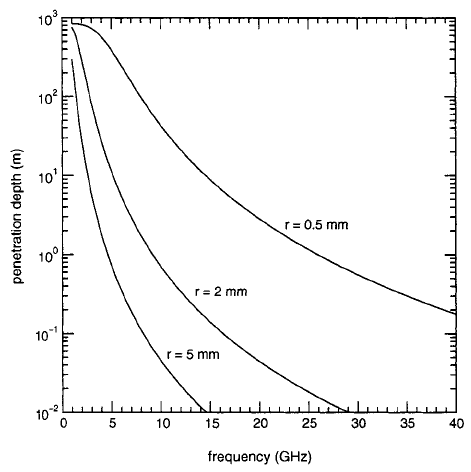 Fig. 21. Theoretical microwave penetration depth for snow with a density of 0.3 g·cm-3 at a temperature of 0° C with different grain radii (Bingham and Drinkwater, 2000). |
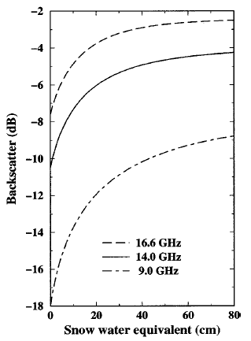 Fig. 22. Backscatter at 57° incidence angle and horizontal polarization as a function of snow water equivalent for dry snow from empirical model functions (Nghiem and Tsai, 2001). |
Though it may penetrate deeper, however, the downside to employing a lower
frequency is that it has weaker snow detection, as illustrated in Figure 22:
the 9.0 GHz signal has a much lower backscatter signal, reaching as low as
-20 dB, which may be too noisy for accurate measurement of  (Nghiem and Tsai, 2001). Another advantage of using higher frequencies is
that their wavelengths are small enough to penetrate the gaps of vegetative
elements such as stems and branches so that the backscattered signal comes
from the surface. Lower frequencies, on the other hand, are inhibited by vegetation,
preventing the underlying snow cover to be detected.
(Nghiem and Tsai, 2001). Another advantage of using higher frequencies is
that their wavelengths are small enough to penetrate the gaps of vegetative
elements such as stems and branches so that the backscattered signal comes
from the surface. Lower frequencies, on the other hand, are inhibited by vegetation,
preventing the underlying snow cover to be detected.
As with snow cover, sea ice is important to climate because of its high albedo and insulation, which deflects solar radiation and prevents a significant amount of heat in the ocean from warming the polar atmosphere. The thickness of sea ice, also, determines the relative amount of insulation that it provides and is important to quantify. Large icebergs are also important to study because of their desalinizing, or freshening, of the ocean, large amounts of which could potentially inhibit the ocean’s conveyor belt and trigger a period of increased glaciation, or an ice age. Sea ice and icebergs also present significant challenges and hazards to navigation in the ocean. As with other cryospheric applications of spaceborne scatterometry remote sensing, surface roughness and dielectric properties influence the backscattered signal received at the antenna so that geophysical properties can be derived using scatterometer data.
The detection and classification of sea ice are important scatterometer applications that have been given considerable attention in the literature. The detection of sea ice is based on the distinct difference in backscatter between open water and that of sea ice. The backscatter from sea ice is relatively much higher so that thresholds can be set for the detection of sea ice. The classification of sea ice, on the other hand, is more complex and is important for estimating ice thickness and thus amount of insulation provided by the sea ice cover. For the purposes of remote sensing, sea ice can be categorized into perennial multi-year ice, which is generally thick (3-6+ m), and new first-year ice, which is relatively thin (1-2 m). Multi-year ice (MY) and first-year ice (FY) have distinct backscatter signatures, which allows them to be distinguished using scatterometry.
MY ice is usually very deformed and rough at the surface due to wave deterioration,
ice pack shearing, and melt/refreezing cycles that occur over time. In contrast,
FY ice is usually smooth when freshly formed or can also be somewhat rough
due to ridging at the edges caused by wave action and collision with other
bodies of ice. As roughness of the sea ice surface increases, the backscatter
response becomes more isotropic and B values increase as a result
(i.e. become less negative and approach zero). For this reason, MY ice has
the highest B values, while ridged FY ice has intermediate B
values, and smooth FY ice has very low (i.e. very negative) B values
as the response of  vs. incidence angle becomes nearly specular.
vs. incidence angle becomes nearly specular.
Another distinguishing factor between MY and FY ice is their salinity.
Over time, pockets of brine (salt water) gradually seep out of the sea ice
so that MY ice has considerably lower salinity compared to FY ice. Because
salinity increases the complex dielectric constant of a medium, the material
more greatly absorbs the incident microwave energy, resulting in lower values
of  ,
or A. As a result, MY ice has much higher A values than
FY ice, for which different thresholds have been used in the literature. As
an example, however, Voss et al. (2003) use -11 dB as the cutoff between FY
and MY ice, with MY ice having A values greater than -11 dB and vice
versa. Figure 23 is an image showing classification of sea ice into the three
classes described above, accomplished by manually defining training regions
for each ice type within the image and employing these to automate classification
of the entire image using principle components analysis (Remund et al., 2000).
,
or A. As a result, MY ice has much higher A values than
FY ice, for which different thresholds have been used in the literature. As
an example, however, Voss et al. (2003) use -11 dB as the cutoff between FY
and MY ice, with MY ice having A values greater than -11 dB and vice
versa. Figure 23 is an image showing classification of sea ice into the three
classes described above, accomplished by manually defining training regions
for each ice type within the image and employing these to automate classification
of the entire image using principle components analysis (Remund et al., 2000).
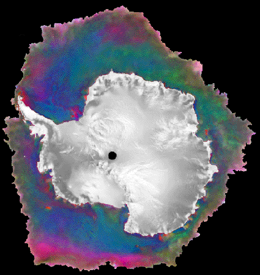 Fig. 23. Sea ice classification using analysis of ESCAT, NSCAT, and SSM/I data from 17-22 September, 1996. Red = icebergs and low-salinity multiyear ice; green = deformed, fractured, seasonal ice; blue = undeformed, level seasonal ice (Remund et al., 2000). |
Comparisons of scatterometry with passive microwave sea ice classifications show that passive microwave sensors such as the Special Sensor Microwave/Imager (SSM/I) overestimate the areal extent of MY ice vs. FY ice by as much as 12% due to atmospheric interference at high frequencies employed by these sensors for sea ice classification (Voss et al., 2003). The perennial ice zone, then, can be best characterized using a combination of both active and passive microwave sensors (Grandell et al., 1999; Kwok et al., 1999; Gohin et al., 1998).
Recording the date of melt onset and the duration
of the melt season are other important parameters for studying the
long-term trends of sea ice. Earlier melt onset dates and lengthened duration
of the melt season have resulted in significant reductions of sea ice extent
in the Arctic ocean over the past twenty-five years, with record low sea ice
extent occurring in the summer of 2002 (Serreze et al., 2003) and predictions
from climate models that the Arctic will be essentially ice free in summer
by the year 2100 (Johannessen et al., 2002). Using scatterometry to detect
surface melt on sea ice is theoretically the same as detecting surface melt
on the Greenland and Antarctic ice sheets: liquid water strongly absorbs microwave
radiation so that  is rapidly and significantly reduced at the onset of melt.
is rapidly and significantly reduced at the onset of melt.
A couple of studies have validated scatterometer melt detection by comparing
onset periods with near-surface air temperatures recorded at nearby coastal
meteorological stations, which in both cases showed that temperatures increase
above 0° C when sea ice melt begins to be detected in the scatterometry
data (Drinkwater and Liu, 2000; Winebrenner et al., 1998). In another study,
scientists observed melt ponding on sea ice from a helicopter during the period
at which the scatterometer data had determined melt onset (Drinkwater et al.,
1998). The duration of the melt season, then, can be derived by measuring
the amount of time between the onset of melt and the onset of freeze, which
is correlated with a sudden positive increase in  .
.
Lastly, scatterometer data have also been used to track sea ice motion. This can be useful information for deducing large-scale circulation patterns and for predicting the location of sea ice for navigation. Wavelet analysis is employed over a series of scatterometer images based on detection and tracking of sea ice backscatter features extracted from the data. Comparisons with in situ sea ice motion data collected from buoys have shown that sea ice motion can be mapped with scatterometer data to an accuracy of ±2-3 cm/s in velocity and directional accuracy within about 30° (Zhao et al., 2002; Liu and Zhao, 1999). This accuracy is comparable to SSM/I-derived sea ice velocities and is slightly better than SSM/I-derived sea ice directions (35-38°).
Because passive microwave radiometers and scatterometers extract different features (i.e. emissivity vs. backscatter), the spatial coverage that each achieves will be slightly different. For this reason, sea ice motion derived from scatterometers, passive microwave radiometers, and buoys can be merged to achieve the most complete coverage possible. In merging these different data sources, a weighted average is applied according to their respective accuracies; Zhao et al. (2002), for example, employed a weighting scheme of 1/3, 1/2, and 1/6 to QSCAT, buoy, and SSM/I data respectively. Figure 24 illustrates an image of sea ice motion vectors that have been derived from multiple sources.
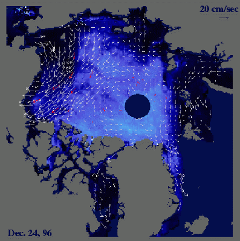 Fig. 24. White arrows indicate sea ice motion (velocity and direction) from merged NSCAT, SSM/I, and buoy data (Liu and Zhao, 1999). |
NEXT Problems, issues, and future directions, Conclusion, and References
Introduction
• Importance
of the cryosphere • What
is scatterometry?
Cryospheric applications of scatterometry • Problems,
issues, and future directions • Conclusion
• References
© 2004, {% include footer.ssi %}